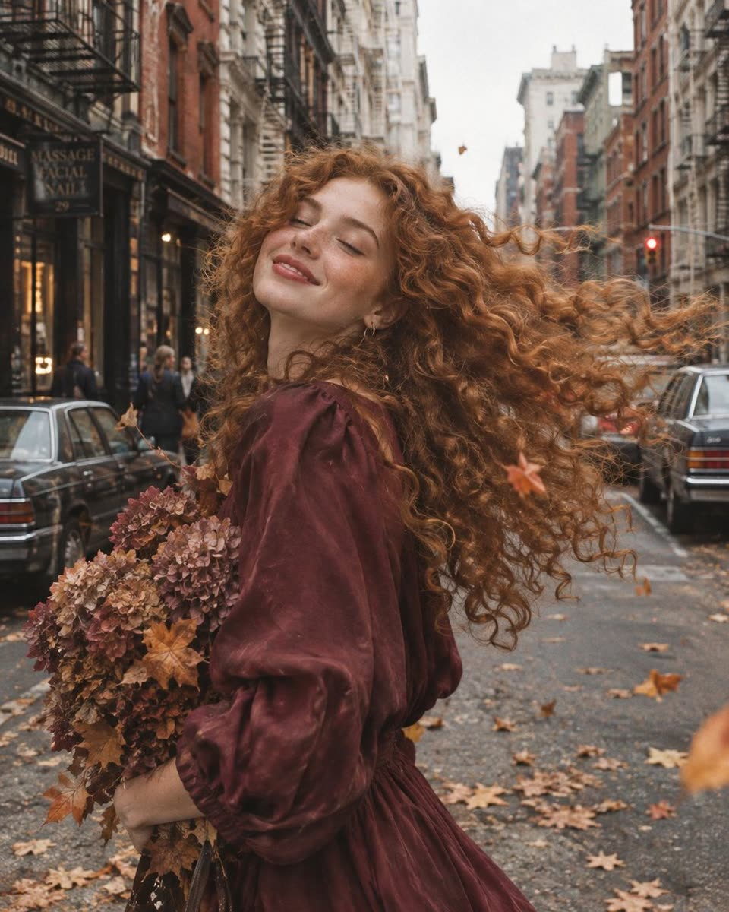

Candid analog street-style, autumn morning
GRN-011Grain / Filterunspecifiedby Tanvir (@Tanvir48992)2026-09-25

Candid analog street-style photo of a freckled woman caught mid-motion among autumn leaves.
Prompt
Candid analog street-style fashion photograph of a young woman with fair, freckled skin and voluminous copper-ginger curly hair caught mid-spin on a busy downtown New York City street, her long ringlets swirling and flying dramatically to the right in motion. Head tilted back and turned over her shoulder, eyes gently closed, a soft, joyful, carefree smile with natural rose-pink lips. Vertical 4:5 frame, medium shot from waist up at eye level, subject slightly off-center, hair in motion filling the right side of the frame. Face: luminous, natural skin with light freckles across the nose and cheeks, soft peachy blush, minimal makeup with a dewy rosy-nude eyeshadow, fine natural eyebrows, a relaxed, blissful, spontaneous expression. Hair: enormous, bouncy, tight-to-loose copper-red and golden-strawberry curls with sunlit highlights, individual flyaway strands and ringlets frozen mid-air with slight motion blur at the tips. Outfit: a flowing deep burgundy-maroon silk or satin blouse-dress with voluminous gathered sleeves and elasticated cuffs, soft draped folds catching the light, slightly wind-blown. She cradles a large armful of dried autumn hydrangeas in dusty rose, terracotta, rust, and muted peach, along with a few crisp orange-brown fall leaves, some petals and leaves drifting through the air in the foreground. Setting: a narrow SoHo-style Manhattan street in autumn, lined with cast-iron facades, fire escapes, tall pale stone and red-brick buildings, and vintage storefront signage on the left. Parked 1980s American sedans in charcoal and silver on both sides, blurred pedestrians walking in the distance, a red traffic light glowing softly in the background, fallen autumn leaves scattered across gray asphalt. Overcast pale white sky visible between the buildings. Lighting: soft, diffused overcast daylight with a subtle warm cast, gentle wraparound light on the face, no harsh shadows, muted contrast, natural skin tones with a lightly desaturated, nostalgic film look. Camera and film: shot on 35mm film, Kodak Portra 400 look, 50mm f/1.8 lens, shallow depth of field with creamy background bokeh, sharp focus on the face and front curls, slight motion blur on the swirling hair, visible fine film grain, gentle halation and faint vignetting, 1970s-80s editorial photography aesthetic. Color palette: burgundy, copper-ginger, terracotta, dusty rose, rust orange, warm gray asphalt, cream stone, and muted olive-brown, with a warm autumn tone. Style: nostalgic vintage editorial photography, candid lifestyle fashion campaign, cinematic, romantic, joyful, photorealistic, ultra-detailed, 8K.
Our Seedance 2.5 adaptation
[ADAPTED for Seedance 2.5 by Grok Bot; not the creator's prompt. Follows the official BytePlus Seedance 2.5 prompt guide: asset binding → one-sentence summary → integer-second timeline → consistency notes → negatives.] API: duration 8, ratio 4:5 (use 3:4), resolution 1080p, generate_audio true. Assets: Image 1 is the woman (identity lock: freckles and copper-ginger curls). Image 2 is the outfit (wardrobe reference; keep fabric and color exact). Summary: An 8-second candid analog street-style moment on a busy downtown street on an autumn morning. The woman from Image 1 spins and her curls fly out in slow motion, shot like 35mm street fashion. 0-2s: Waist-up eye-level shot. She walks among blurred commuters, laughing. 2-6s: She spins over her shoulder. Speed ramps into slow motion as her ringlets swirl to the right and catch golden backlight, eyes closed in a carefree smile. 6-8s: Speed returns to normal. She completes the turn and keeps walking past the lens. Film look: 35mm color negative, warm autumn grade, natural grain, slight motion blur on the background crowd, soft highlight halation. Keep consistent: the same curls, freckles and outfit, with real hair physics. Audio: city morning ambience, footsteps, distant traffic. No BGM. No subtitles.
Tags: analog, street style, film color